Contents
function [b,a,H,h,t,X,y,Y,Yk,MSE,so,H2f,Is,If,Isf] = fname3
% De La Salle University % Electronics and Communications Engineering Department % Course : LBYCPA4 % SECTION : % Submitted by : % Submitted to : Dr. Edwin Sybingco % Exercise 3 : Frequency Representations of Signals and Systems
Task 1
Generate the time index for the impulse response
n = 0:31; % Specify the filter coefficients of filter 1 to 4 using the cell array % b{k} and a{k} where k = 1,2,3, and 4. Also determine the following % % impulse response and store it in h{k} % Frequency response and store them in H{k} % Filter 1 b{1} = (1/8)*[1 1]; a{1} = [1 -3/4]; % Filter 2 b{2} = (1/8)*[1 -1]; a{2} = [1 3/4]; % Filter 3 b{3} = (7/32)*[1 0 -1]; a{3} = [1 0 9/16]; % Filter 4 b{4} = (25/32)*[1 0 1]; a{4} = [1 0 9/16]; % Complete the table below by categorizing the filter type as lowpass, % highpass, bandpass, or bandstop t = table([1;2;3;4], 'VariableName', {'FilterNumber'}); t.FilterType(1) = {'Lowpass'}; t.FilterType(2) = {'Highpass'}; t.FilterType(3) = {'Bandpass'}; t.FilterType(4) = {'Bandstop'}; % Frequency and impulse responses with visualization H = cell(4,1); h = cell(4,1); for k = 1:4 % Frequency response [H{k}, w] = freqz(b{k}, a{k}, 512); % Impulse response h{k} = impz(b{k}, a{k}, length(n)); % Visualization figure(k); subplot(2,2,1); % Top left - Magnitude response plot(w/pi, abs(H{k})); title(['Filter ', num2str(k), ' Magnitude Response']); ylabel('Magnitude'); subplot(2,2,2); % Top right - Pole-zero plot zplane(b{k}, a{k}); title(['Filter ', num2str(k), ' Pole-Zero Plot']); subplot(2,2,3); % Bottom left - Phase response plot(w/pi, angle(H{k})); title(['Filter ', num2str(k), ' Phase Response']); ylabel('Phase (radians)'); subplot(2,2,4); % Bottom right - Impulse response stem(n, h{k}); xlabel('n'); ylabel('h[n]'); title(['Filter ', num2str(k), ' Impulse Response - ', t.FilterType{k}]); end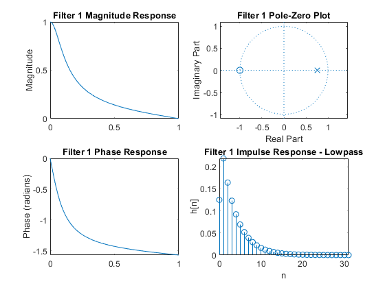 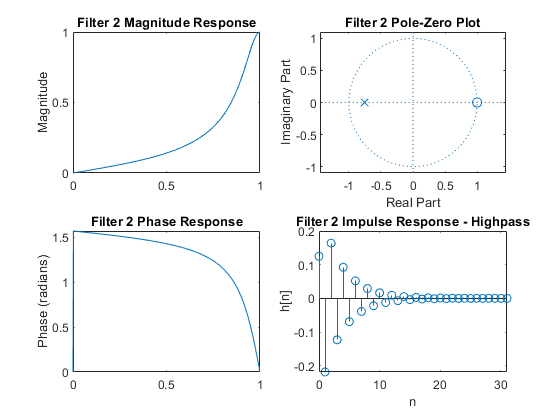 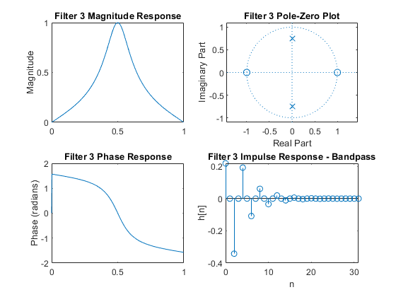 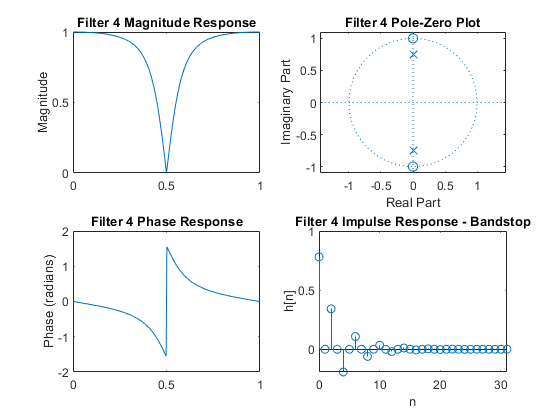
Task 2: Frequency Resolution
N = [25, 50, 75, 100, 200, 1000]; X = cell(1, length(N)); for k = 1:length(N) n = 0:N(k)-1; x{k} = cos(0.2*pi*n) + cos(0.22*pi*n) + cos(0.6*pi*n); X{k} = fft(x{k}, 1024); X{k} = X{k}(1:512); % Visualization figure(5); subplot(3, 2, k); w = linspace(0, pi, 512); plot(w/pi, abs(X{k})) title(['N = ', num2str(N(k))]) ylabel('Magnitude') [pks, locs] = findpeaks(abs(X{k}), 'MinPeakProminence', max(abs(X{k}))/2); hold on plot(w(locs)/pi, pks, 'ro') hold off end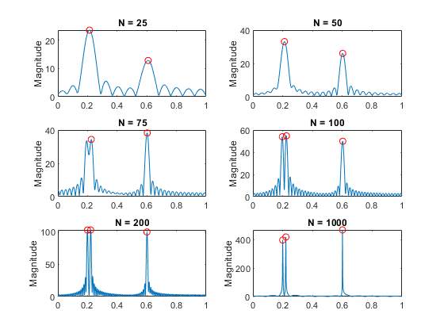
Task 3: MSE of DTFT and DFT/FFT
b1 = 0.0168 * [1 0 -2 0 1];
a1 = [1 -2.5333 3.2089 -2.0520 0.6561];
N = [8 16 32 64];
Y = cell(1, length(N));
Yk = cell(1, length(N));
y = cell(1, length(N));
MSE = zeros(1, length(N));
for k = 1:length(N)
y{k} = filter(b1, a1, [1 zeros(1, N(k)-1)]);
% Compute DTFT
[Y{k}, wF] = freqz(y{k}, 1, 1024, "whole");
% Compute DFT with N(k) points
Yk{k} = fft(y{k}, N(k));
Yint = interp1(2*pi*(0:N(k)-1)/N(k), abs(Yk{k}), wF, 'linear', 'extrap');
% Compute MSE
MSE(k) = mean((abs(Y{k}) - Yint).^2);
% Visualization of DTFT and DFT (Figure 6)
figure(6);
subplot(2, 2, k);
plot(wF/pi, abs(Y{k}))
hold on
stem(2*pi*(0:N(k)-1)/N(k)/pi, abs(Yk{k}), 'r')
hold off
title(['Y overlaid Yk{', num2str(k), '}'])
xlabel('Normalized Frequency (\times\pi rad/sample)')
ylabel('Magnitude')
legend('DTFT', 'DFT')
% Visualization of MSE (Figure 7)
figure(7);
plot(N, MSE, '-o'); title('Mean Square Error vs N');
xlabel('N'); ylabel('MSE');
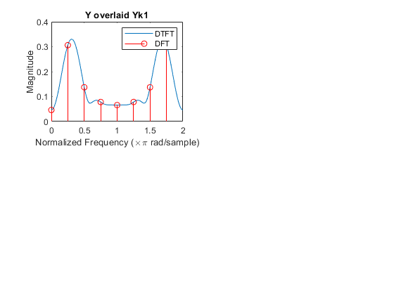 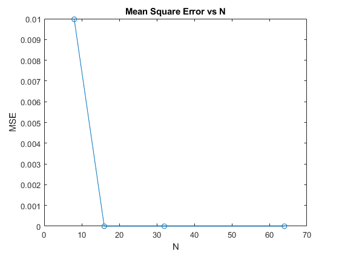 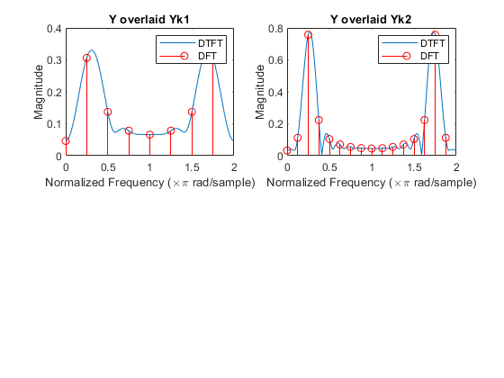 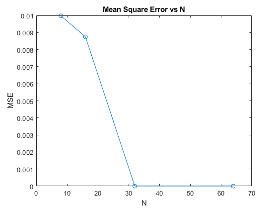 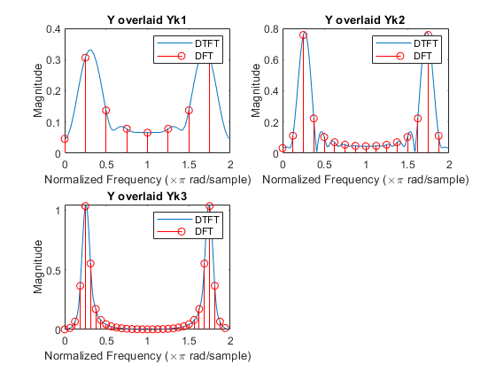 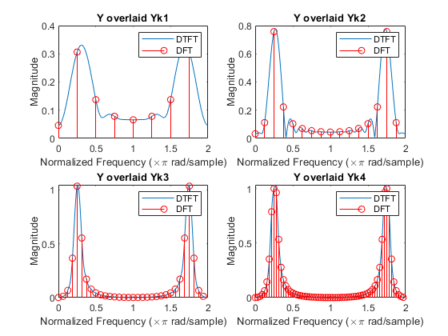 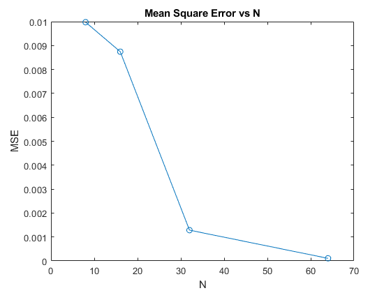 Task 4: Time-Frequency Representation
[s, Fs] = audioread('RollingInTheDeep.wav'); so = filter(b1, a1, s); figure(8); subplot(2, 1, 1); spectrogram(s, hanning(512), 128, 512, Fs, 'yaxis'); title('Original Audio'); subplot(2, 1, 2); spectrogram(so, hanning(512), 128, 512, Fs, 'yaxis'); title('Filtered Audio');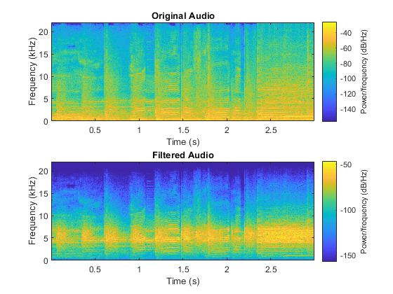 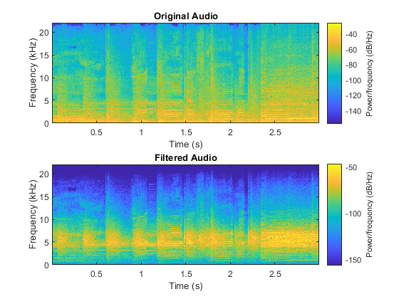
Task 5: Image Processing
h2 = 0.142 * [0 1 2; -1 0 1; -2 -1 0]; H2f = fftshift(fft2(h2, 512, 512)); I = imread('lena_gray.tiff'); Is = fftshift(fft2(I)); If = imfilter(I, h2, 'conv'); min_val = min(If(:)); If = If - min_val; % Shift so minimum is zero If = uint8(If); Isf = fftshift(fft2(If)); % Visualization of spectra figure(9) subplot(2,3,1) mesh(abs(H2f)) title('Spectrum of the Filter') subplot(2,3,2) mesh(abs(Is)) title('Spectrum of the Original Image') subplot(2,3,3) mesh(abs(Isf)) title('Spectrum of the Filtered Image') subplot(2,3,4) imshow(I) title('Original Image') subplot(2,3,5) imshow(If) title('Filtered Image')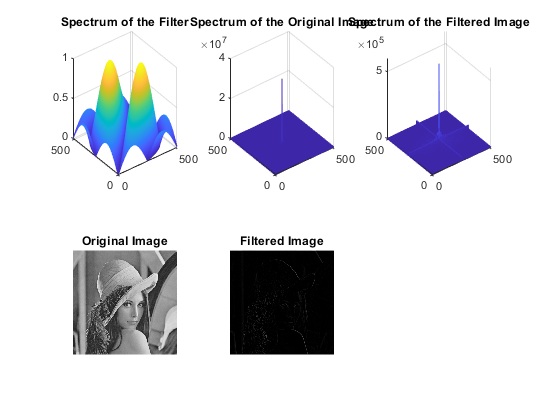
end
ans =
1×4 cell array
Columns 1 through 3
{[0.1250 0.1250]} {[0.1250 -0.1250]} {[0.2188 0 -0.2188]}
Column 4
{[0.7812 0 0.7812]}